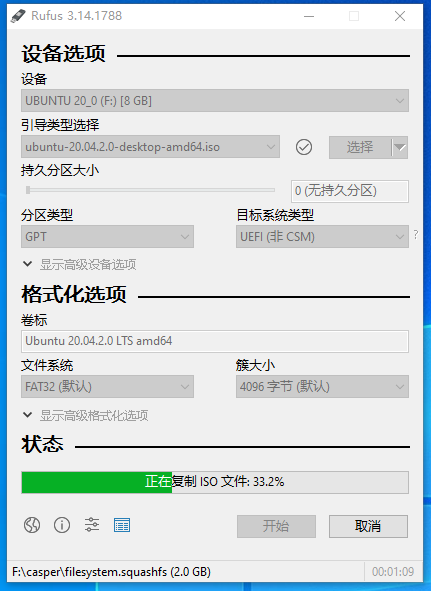
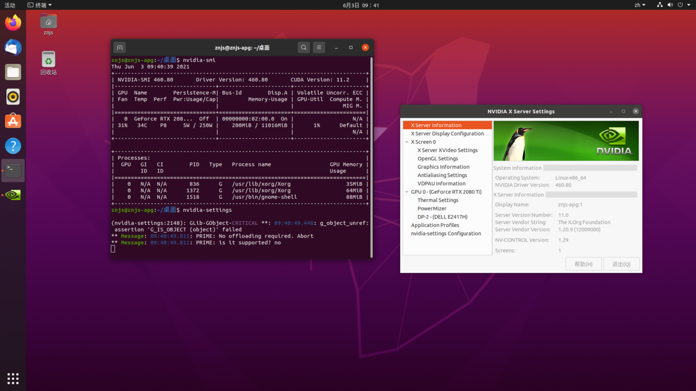
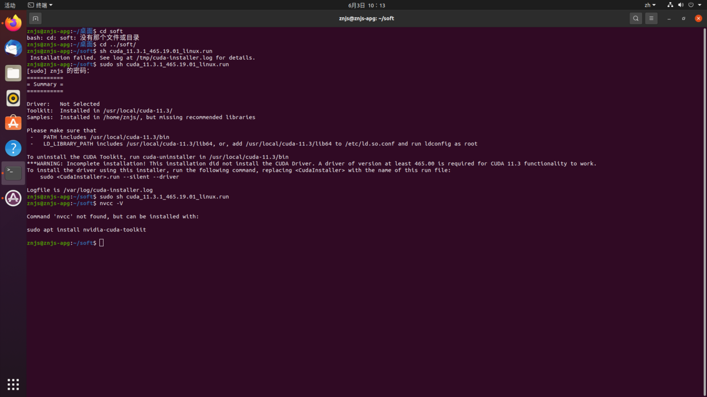

在 Ubuntu20.04 上搭建深度学习环境
导航
在 Ubuntu20.04 上搭建深度学习环境¶
首先 下载 Ubuntu Desktop，然后使用 rufs 制作 U 盘启动盘，并作如下配置：
{kind=link}
最后，便可以安装 Ubuntu 了。
安装完毕之后需要做一些配置。
初级配置¶
智能升级。安装新软件包并删除废弃的软件包：
$ sudo apt-get dist-upgrade
$ sudo apt-get autoremove
删除一些不需要的内置软件：
$ sudo apt-get remove libreoffice-common
$ sudo apt-get remove unity-webapps-common
$ sudo apt-get autoremove
更新和升级系统
$ sudo apt update
$ sudo apt upgrade
安装 Git
$ sudo apt-get install git
配置 git 的两个重要信息，user.name 和 user.email，终端输入如下命令即可设置
$ git config --global user.name "Your Name"
$ git config --global user.email "email@example.com"
支持挂载 exfat
$ sudo apt-get install exfat-fuse
安装 g++ gcc 开发必备编译库（为之后安装 CUDA 做准备）
$ sudo apt-get install build-essential
为了支持 ssh server，需要：
$ sudo apt-get install openssh-server
$ sudo /etc/init.d/ssh start
$ sudo service ssh start
为了防止 Ubuntu 系统被玩坏了，我们需要一个可以进行备份和还原的工具：TimeShift
$ sudo apt-add-repository -y ppa:teejee2008/ppa
$ sudo apt update
$ sudo apt install timeshift
配置 GPU¶
安装最新的 Nvidia 驱动程序：

下面使用 MobaXterm 远程操作 Ubuntu。
- 查看显卡型号
lspci | grep -i nvidia输出：
02:00.0 VGA compatible controller: NVIDIA Corporation TU102 [GeForce RTX 2080 Ti] (rev a1) 02:00.1 Audio device: NVIDIA Corporation TU102 High Definition Audio Controller (rev a1) 02:00.2 USB controller: NVIDIA Corporation TU102 USB 3.1 Host Controller (rev a1) 02:00.3 Serial bus controller [0c80]: NVIDIA Corporation TU102 USB Type-C UCSI Controller (rev a1)
- 查看驱动版本
sudo dpkg --list | grep nvidia-*输出：
02:00.0 VGA compatible controller: NVIDIA Corporation TU102 [GeForce RTX 2080 Ti] (rev a1) 02:00.1 Audio device: NVIDIA Corporation TU102 High Definition Audio Controller (rev a1) 02:00.2 USB controller: NVIDIA Corporation TU102 USB 3.1 Host Controller (rev a1) 02:00.3 Serial bus controller [0c80]: NVIDIA Corporation TU102 USB Type-C UCSI Controller (rev a1)
重启（此时重启最为重要）电脑查看 Nouveau 是否被禁用（这里应该是没有任何的输出的）（这是最关键的一步）：
lsmod | grep nouveau
若有输出则说明 Nouveau 还在使用。做深度学习，要用到 NVIDIA 的显卡，因此需要改显卡驱动，禁用
nouveau。即以管理员是身份打开/etc/modprobe.d/blacklist.conf文件，然后添加内容：blacklist nouveau #添加数据用来禁用nouveau。而打开文件我们可以使用 vscode 进行文件编辑：
$ sudo code /etc/modprobe.d/blacklist.conf
验证 GPU 驱动是否正确安装：
$ nvidia-smi
$ nvidia-settings
出现下图便表示安装成功：

- 安装 CUDA 11.3
$ wget https://developer.download.nvidia.com/compute/cuda/11.3.1/local_installers/cuda_11.3.1_465.19.01_linux.run $ sudo sh cuda_11.3.1_465.19.01_linux.run
因为我们已经安装了 Nvidia 驱动，会提醒移除，此时我们先 Continue，然后选掉 Driver：

安装完毕，会显示：

警告里面关于 CUDA driver 的内容不用管，说的就是没装 NVIDIA driver。
配置环境变量中的路径变量(PATH)：
$ sudo gedit ~/.bashrc
在最后一行加入路径：
export PATH="/usr/local/cuda-11.3/bin:$PATH"
export LD_LIBRARY_PATH="/usr/local/cuda-11.3/lib64:$LD_LIBRARY_PATH"
保存之后，为了使这个修改立即生效，还需要输入如下代码（如果不执行 source 命令，则需重启系统才能生效）：
$ source ~/.bashrc
此时便可以查看 CUDA 版本：
$ nvcc -V